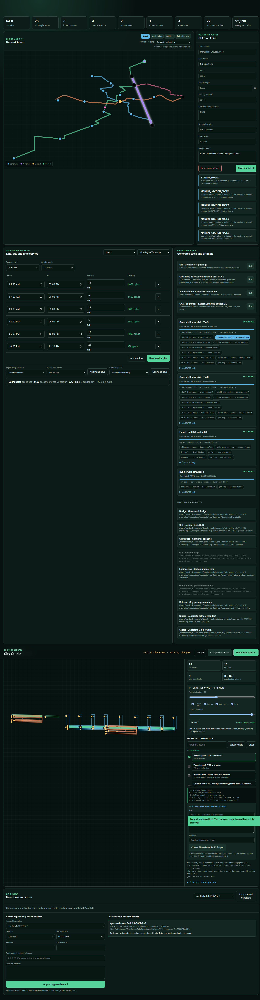
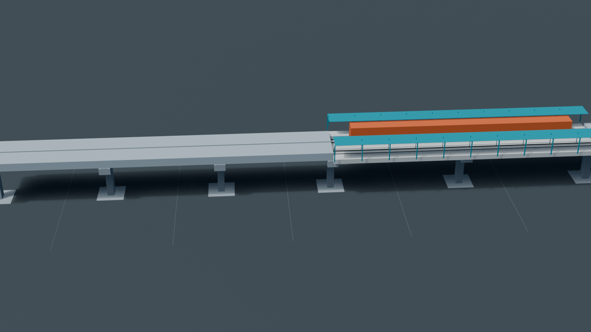

Design and regenerate
- Interactively edit lines, stations, alignments, demand and line/day/hour service.
- Generate GIS, OSR-ALN, IFC4.3, IDS/BCF, CAD quantities, costs and city packages.
- Store immutable revisions, semantic comparisons and approvals in Git.
- Propagate controlled geometry and rate changes through city and portfolio calculations.
Simulate and operate
- Run deterministic train, station, energy, wayside, point/crossing and depot software together.
- Use one Workbench for City Studio, simulation, OCC training and Ops Core.
- Exercise QA gates, manufacturing, maintenance, incidents and evidence persistence.
- Run pinned browser acceptance and repository drift checks before review.

